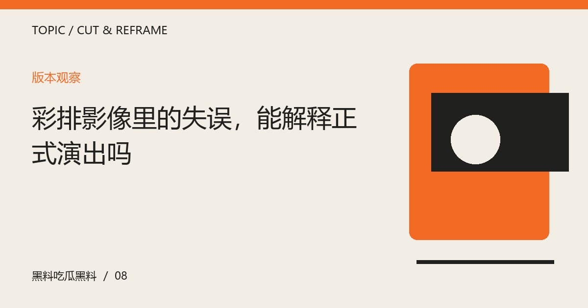

彩排影像里的失误，能解释正式演出吗
工作过程与公开成片处在不同状态。看清视频用途、版本与公开范围，避免把练习片段当作最终完成度的证明。

先确认影像属于哪个阶段
彩排可能用于试灯、走位、声音检查或完整联排，不同任务下关注点并不相同。看到一个片段时，先核对公开说明与素材来源，不根据服装、舞台位置或拍摄角度猜测全部流程。未经确认的过程影像不应被直接命名为最终彩排。阶段信息会影响评价对象，也决定哪些现象需要更多背景才能理解。
练习状态与成片结果分别评价
过程中出现的停顿或错误可以说明当时发生了什么，却不自动代表正式演出一定如此。相反，正式演出顺利也不会让此前问题从未存在。可以把两个版本并列，观察具体调整，而不将任一片段扩展成对参与者能力与态度的全面评价。讨论应聚焦可见工作与公开作品，不通过一次失误推断人格或私人动机。
注意授权与传播边界
并非所有工作记录都为公开观看制作。即使影像已经流传，也不意味着再次展示具有必要价值。引用时应优先使用正式发布素材，不传播涉及私人信息或明确非公开的画面。若只需要解释一般排练流程，可以使用清楚标注的假设情境，不必借某个人的片段制造戏剧性。内容完整与尊重边界并不相互冲突。
把复盘变成可讨论的问题
若公开材料确实展示前后变化，可以具体问调整了哪些段落、不同环节怎样协作，以及结果与原目标是否一致。不能确认的技术原因则留作问题，不急着替团队解释。这样的复盘既能看见劳动，也能保留批评空间。理解制作过程不是要求观众降低标准，而是让标准对应正确对象，不把不同阶段的材料混成一个结论。
编辑演示：本文用于展示专题阅读；虚构情境不构成真实人物或事件报道。
下一篇：城市雕塑的合影，为什么还需要看周围空间 →